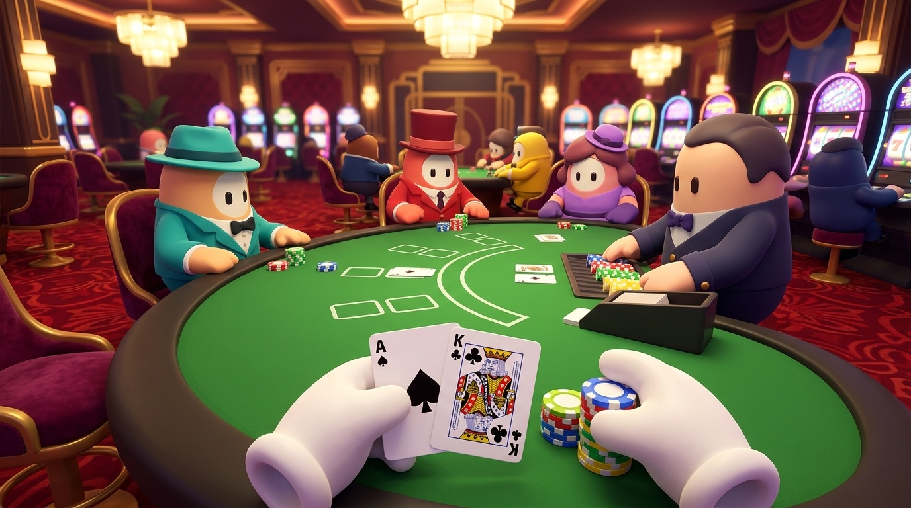
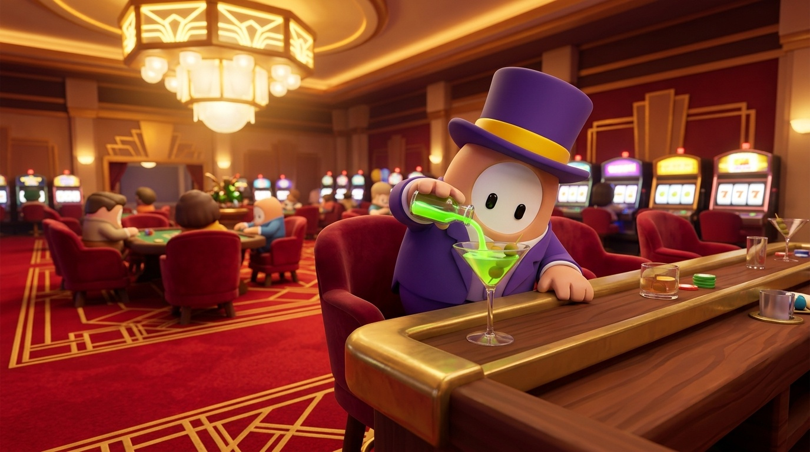
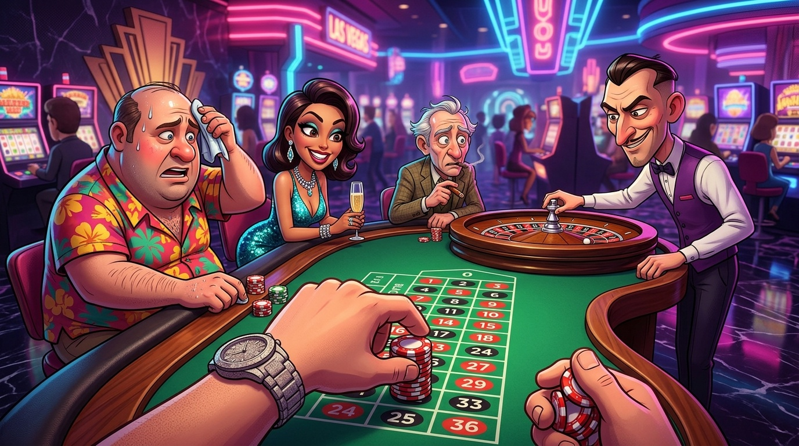
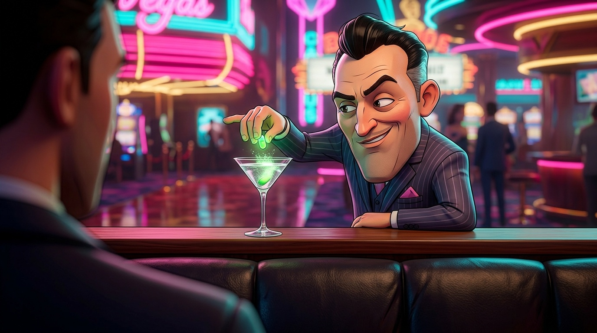
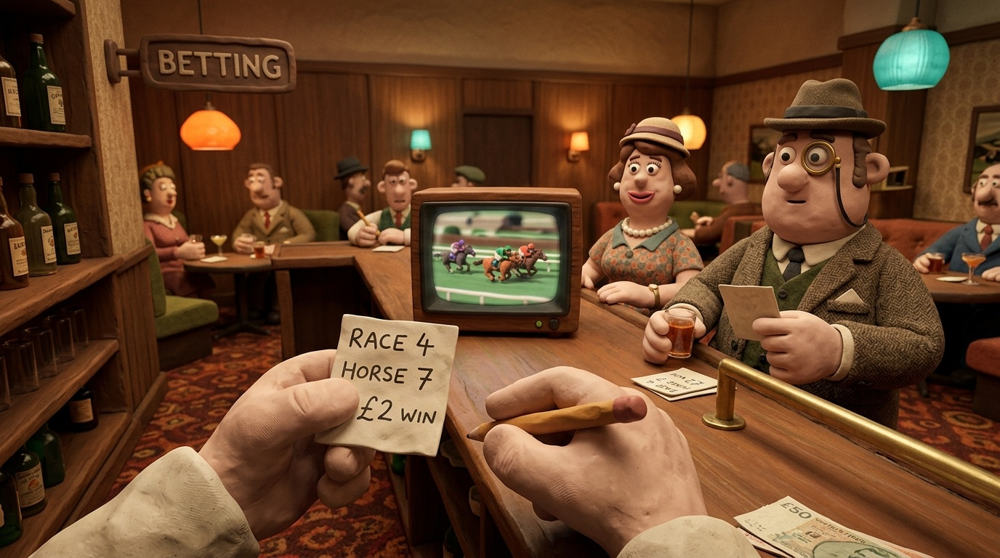
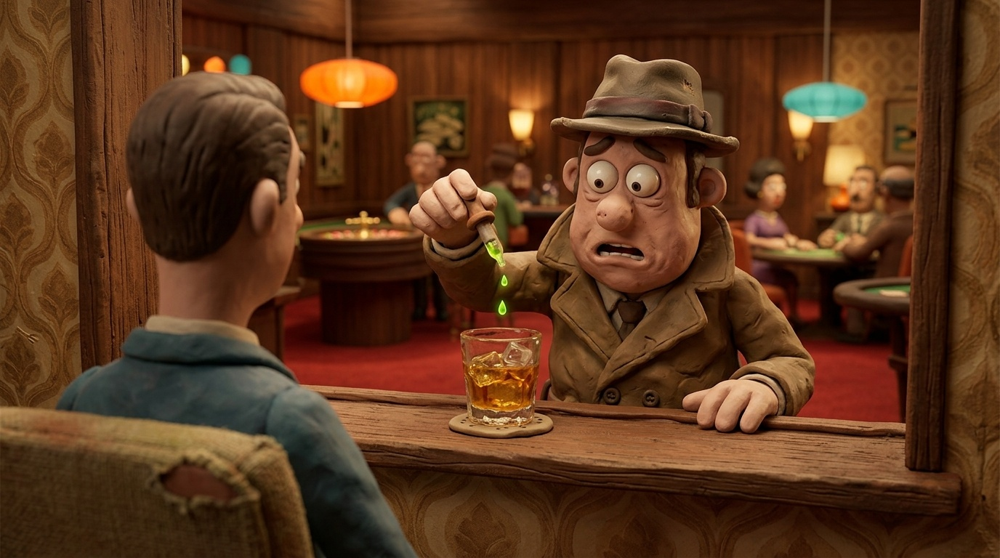

First-person 3D, stylized cartoon. Each look shows sitting at a table and catching the killer at your drink. Reply A, B or C (or mix, e.g. "A characters, C room").
Round bean gamblers in suits and hats, gloved hands, warm Art Deco casino.


Big-headed cartoon humans, neon Vegas. The table shot came out flatter, more like a painted illustration.


Lumpy clay gamblers, 1960s wood-panelled lounge, handmade feel.

